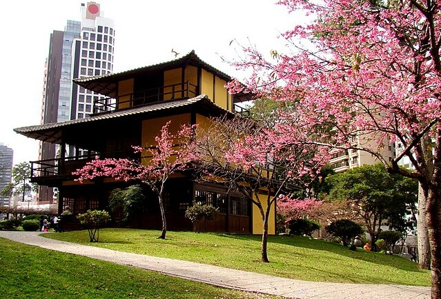

Um dos pontos turísticos mais iconicos de Curitiba
A Praça do Japão, situada no bairro Água Verde em Curitiba, é um importante marco cultural que celebra a herança e a influência da comunidade japonesa na cidade. Inaugurada em 1962, a praça foi criada como homenagem aos imigrantes japoneses e à amizade entre Brasil e Japão. Com seus cerca de 14 mil metros quadrados, o local é um refúgio de tranquilidade, oferecendo uma experiência que une natureza e cultura.
O principal destaque da praça é o jardim japonês, composto por lagos com carpas, pontes e cerejeiras que florescem na primavera, criando um cenário encantador. A praça também abriga um portal torii, típico da arquitetura japonesa, que simboliza a entrada em um espaço sagrado. Outro ponto atrativo é a Casa de Chá, onde são realizadas cerimônias tradicionais que apresentam aos visitantes aspectos da cultura nipônica.
Além disso, a Praça do Japão conta com o Memorial da Imigração Japonesa, um monumento que presta homenagem aos pioneiros japoneses que chegaram ao Brasil. É um espaço que vai além da contemplação, frequentemente recebendo eventos e festivais culturais, como o Hanami, que celebra a floração das cerejeiras. A Praça do Japão é um local de integração cultural, onde a tradição japonesa é preservada e celebrada, tornando-se um símbolo da diversidade e da harmonia em Curitiba.
